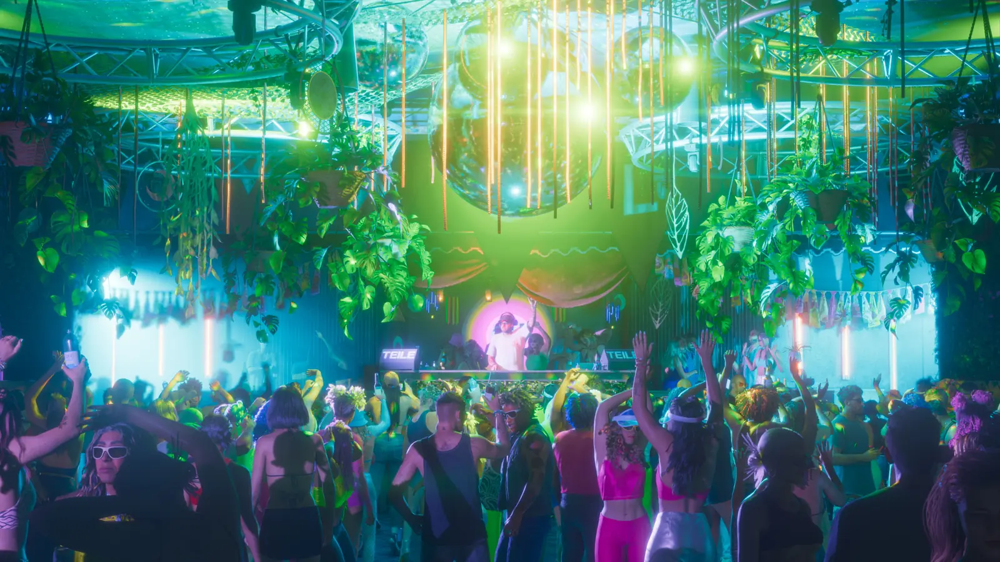

GTA 6 Online
¿Tiene online GTA 6?
El día 1, noGTA 6 sale el 19 de noviembre como juego para un jugador
Si vas a comprarlo para jugar con tus amigos esa misma noche, que lo sepas antes: el 19 de noviembre solo vas a poder jugar la historia de Jason y Lucía. Aquí separo lo que es oficial de lo que son rumores y de lo que creo yo.
Lo confirmado
- Oficial Rockstar describe GTA 6 como una experiencia para un jugador en las reservas y en las fichas de las tiendas, sin mencionar ningún modo online.
- Oficial Take-Two ha dicho que seguirá dando soporte a GTA Online (el de GTA 5) después de que salga GTA 6.
- Oficial Rockstar no ha dado fecha, precio ni detalles del online de GTA 6. Ni siquiera lo ha anunciado formalmente.
- Oficial La compra digital anticipada de GTA 6 (reservas en PlayStation Store y Microsoft Store) incluye un mes de GTA+. La edición en caja no lo trae.
¿Y el rol (RP)?
- Oficial En agosto de 2023 Rockstar compró al equipo de FiveM y RedM, los programas con los que se juega al rol en GTA 5 y Red Dead Redemption 2.
- Oficial Rockstar apoyó en público a NoPixel, el servidor de rol más conocido, hablando del «futuro del rol en GTA», sin limitarlo a GTA 5.
- Teoría Todo apunta a servidores de rol oficiales en GTA 6 Online, pero Rockstar no lo ha confirmado. Si alguien te vende «acceso anticipado» a un servidor de rol de GTA 6, es una estafa.
Lo que dice el historial de Rockstar
Rockstar casi nunca saca el online el mismo día que el juego:
| Juego | Online |
|---|---|
| GTA 5 (17 sep 2013) | GTA Online llegó el 1 de octubre, dos semanas después |
| Red Dead Redemption 2 (oct 2018) | Beta de Red Dead Online, un mes después |
| GTA 6 (19 nov 2026) | Sin anunciar |
Rumores
- Rumor Una fuente conocida en la comunidad asegura que Rockstar quiere sacar el online en el primer mes, como hizo con GTA 5.
- Rumor Otras fuentes apuntan a 2027, y algunos lo relacionan con la llegada del juego a PC.
- Rumor Mensajes internos que salieron en un juicio con antiguos empleados indican que el trabajo en el online ya ha empezado.
- Rumor Se habla de una herramienta interna de Rockstar para crear servidores propios. Nadie de Rockstar lo ha confirmado.
Lo que creo yo
- Teoría No va a llegar en noviembre. Rockstar ha cuidado mucho que todo el mundo hable de la historia, y la quiere sola en el foco unas semanas.
- Teoría Lo más probable es una beta, como en Red Dead, y no un online completo desde el primer día.
- Teoría Tendrá Vice City y todo Leonida, con la misma idea de GTA Online (negocios, atracos y coches), y el rol tendrá mucho más peso que en GTA 5.
- Teoría Tu personaje y tu dinero de GTA Online de GTA 5 no pasarán a GTA 6. A lo sumo, alguna recompensa por haber jugado.
Esto es mi opinión a partir de lo que ha hecho Rockstar otras veces. En cuanto haya algo oficial, lo actualizo aquí y lo cuento en el canal.
Lo que sí puedes hacer el día 1
- Jugar la historia completa, que es para lo que no hace falta ni PS Plus ni Game Pass.
- Seguir en GTA Online de GTA 5, que sigue abierto.
- Preparar tu consola: la lista para la noche del lanzamiento.
El día que anuncien el online, lo cuento
Suscríbete y activa la campana: en cuanto Rockstar diga algo del online de GTA 6, tienes el vídeo en Godca.
Suscríbete a Godca en YouTube